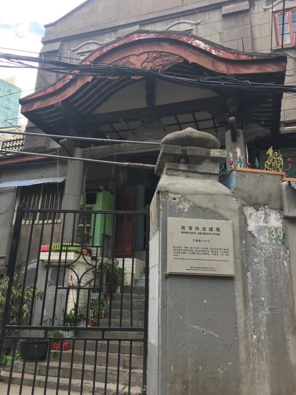
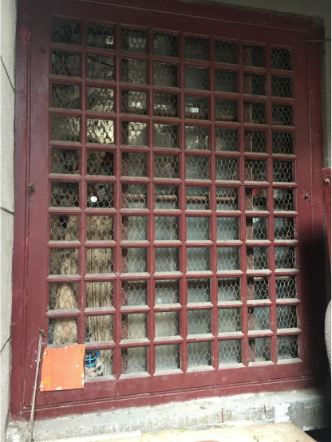

本国寺建于1922年，位于乍浦路439号，原为日本教堂。1923年，原日本海军省间谍宗方小太郎的葬礼在此举办。

(现在的本国寺)
本国寺为砖木结构，是日本传统式和西方教堂建筑特征相结合的折衷风格。建筑形制规整对称，双坡屋顶，主立面外墙采用水刷石墙面。入口雨棚采用日式卷棚屋顶，并有雕梁、斗拱、悬鱼等构件。

（依旧保留了日式风格的移窗 ）
文革之后分配入住，被改造为居民楼。目前此建筑为了适应居民居住进行了部分改造，房屋的内部改动较大，但大结构，窗等部分依旧保留了原有的日式结构。据文化大革命后搬进来的受访者说，进门右手边花园内部曾有小亭，现已拆除。位于入口主寺左后方的寺庙上的悬鱼因住家放烟花不慎被烧毁。